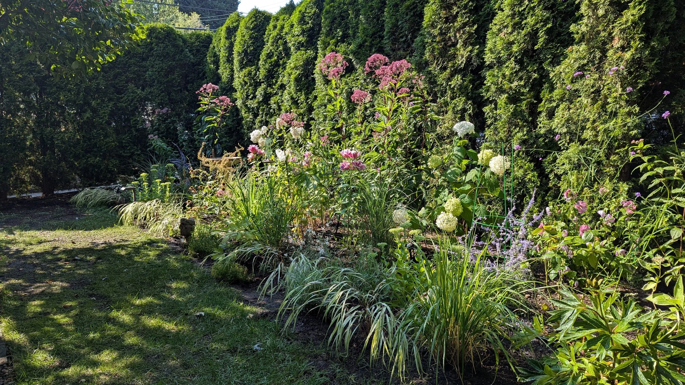
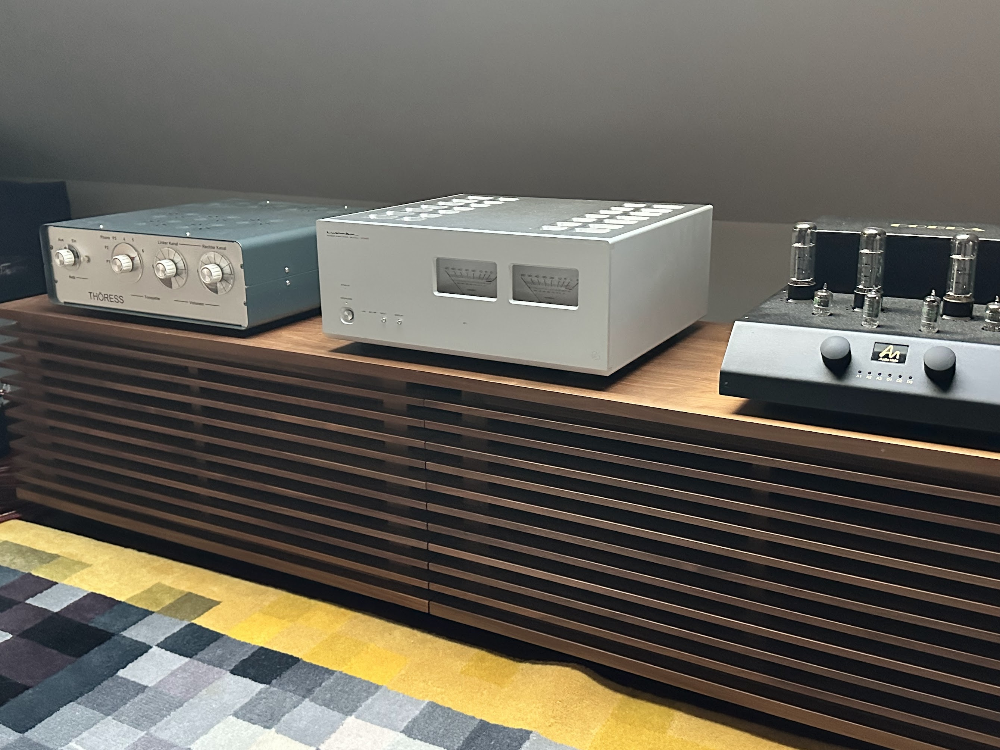
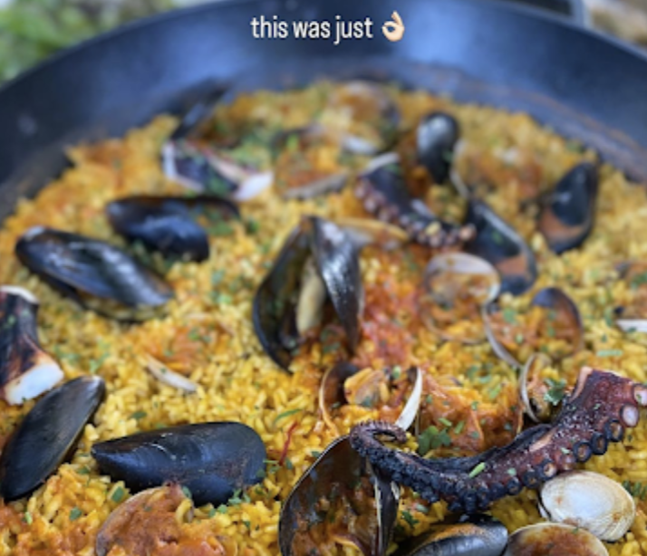

Off-hours, I follow my curiosity towards: gardening, mostly perennials    / tinkering my hifi audio system
/ tinkering my hifi audio system
Off-hours, I follow my curiosity towards: gardening, mostly perennials    / tinkering my hifi audio system